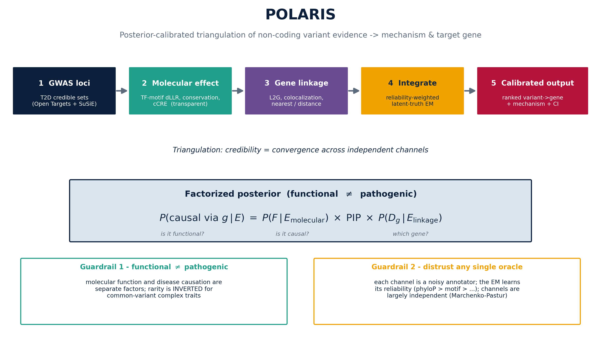
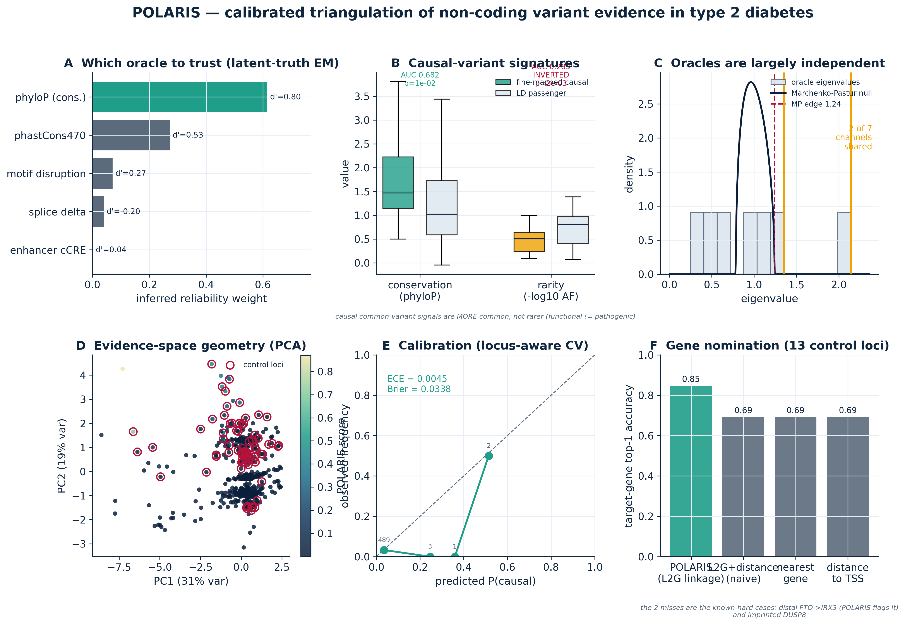
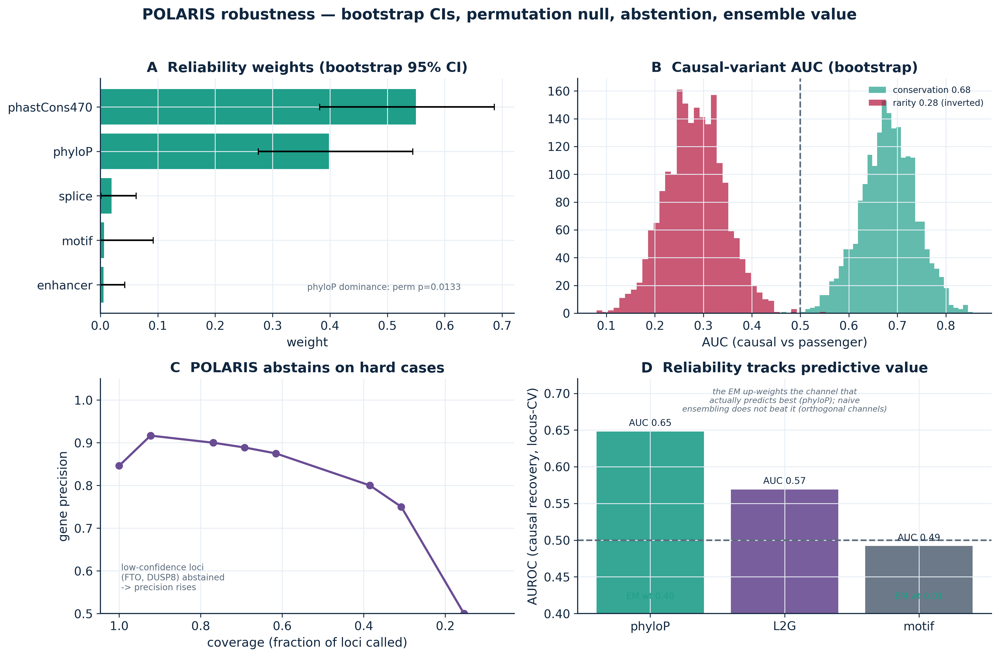
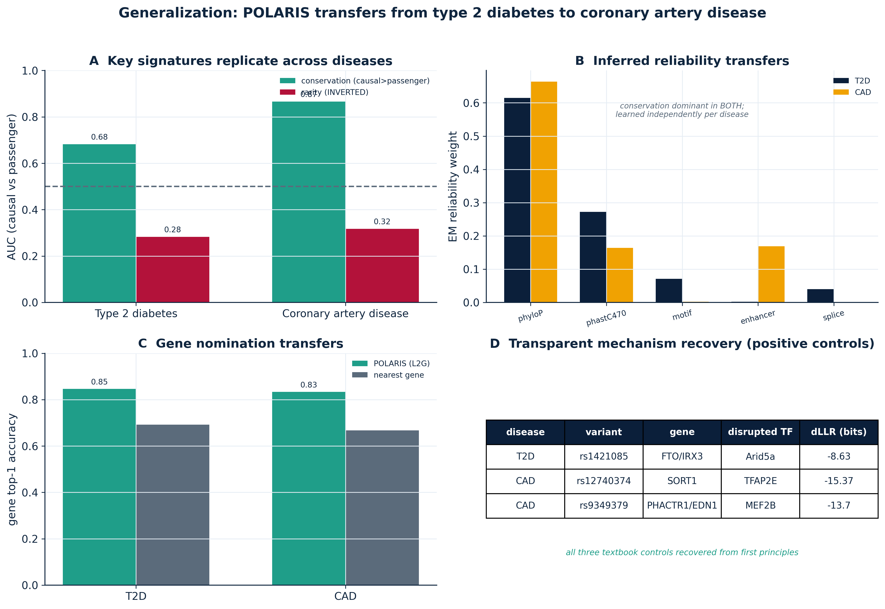
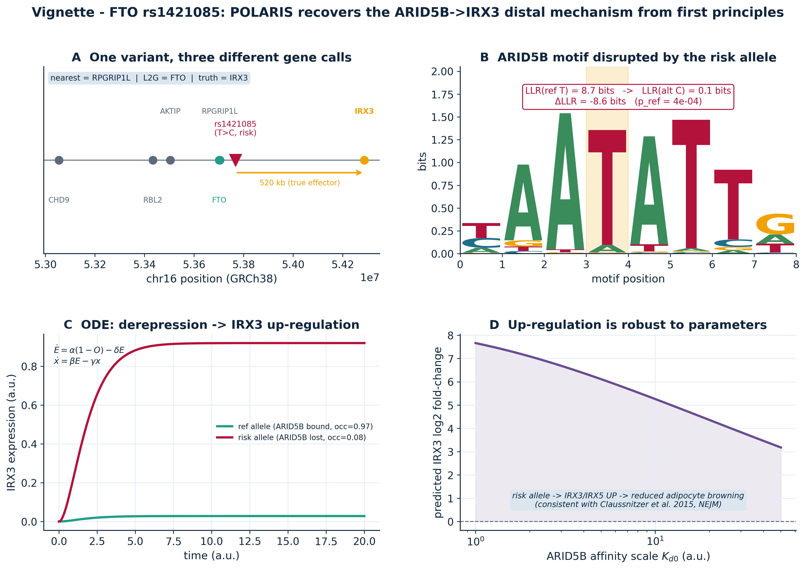

~90% of disease-associated variants are non-coding. Powerful sequence oracles (AlphaGenome, Enformer, SpliceAI) disagree, are poorly calibrated, and degrade on distal effects. The open challenge is no longer prediction — it is principled, calibrated integration. POLARIS turns the field's two guardrails into mathematics.
A molecular effect is not proof of disease causation. POLARIS factorizes the posterior into a molecular-function term and a disease-linkage term — and shows that allele rarity is inverted for common-variant complex traits (replicated across two diseases).
Each evidence channel is a noisy annotator. A latent-truth EM infers each channel's reliability — learning that mammalian conservation is most reliable and motif disruption weak for discrimination (yet uniquely mechanistic). A Marchenko–Pastur null shows the channels are independent.
Six steps, entirely from public data, emit ranked variant→gene hypotheses with an auditable mechanism and a calibrated probability.

The latent-truth EM autonomously learns which oracle to trust; causal variants are conserved but not rare; the channels are largely independent; and the posteriors are well calibrated under locus-aware cross-validation.

Bootstrap confidence intervals, a permutation null for the reliability inference, and confidence-stratified abstention that raises gene precision by withholding hard cases.

Every key finding replicates in an independent disease (coronary artery disease): the conservation enrichment, the rarity inversion, the inferred reliability ordering, and the gene-nomination advantage — and the textbook controls (SORT1, the distal PHACTR1→EDN1) are recovered.

One variant, three different gene calls. POLARIS recovers the textbook ARID5B→IRX3 distal mechanism (Claussnitzer 2015) from first principles: a biophysical motif ΔLLR, an ODE that predicts the correct direction of effect, and a flag that the proximal gene call is untrustworthy.

Top non-coding causal-variant→target-gene hypotheses with transparent mechanism. Click a column header to sort. green = gene call matches the known effector.
Sum-of-Single-Effects regression on z-scores + LD. On simulation: mean PIP 0.96, credible-set FDR 0.00.
JASPAR log-odds ΔLLR (≈ ΔΔG of binding) with an exact analytic null p-value via score-distribution convolution. Recovers ARID5B at FTO.
Giambartolomei 5-hypothesis enumeration; coloc-SuSiE log(PIP) GWAS evidence × GTEx eQTL ABFs. Shared vs distinct PP4 = 0.999 vs 0.000 on simulation.
Semi-supervised Gaussian latent-class model infers per-channel reliability; recovers true discriminabilities and zeroes noise channels.
Marchenko–Pastur null on the channel-correlation spectrum: only 2/7 directions exceed the noise edge → channels independent → triangulation informative.
Gene-regulatory ODE turns ΔLLR into a directional expression prediction; diffusion maps & entropic optimal transport for manifold/tissue views.